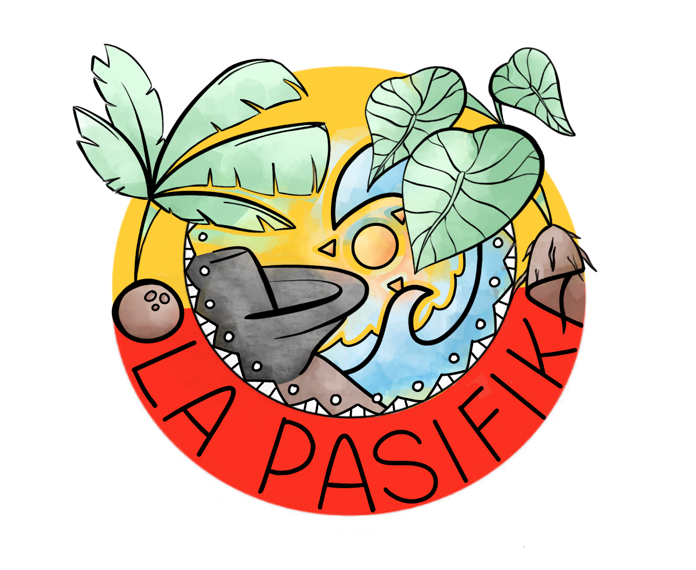

Hi, I'm Kenny.
I'm an HCI researcher and a PhD student in Biomedical and Health Informatics at the University of Washington, advised by Andrea Hartzler and Patrick Wedgeworth.
Mental health and serious illness can be among the hardest topics for clinicians to effectively navigate. Using mixed methods, I currently study how we can design and evaluate ambient AI systems that support clinicians through these conversations, especially when caring for underserved populations such as patients with non-English language preference and Indigenous communities.
To me, innovation should never come at the cost of the humanity that defines medicine.
Outside research, I love reading, testing new coffee recipes, and going on the occasional long run around Seattle (when it's sunny) 🏃♂️.
